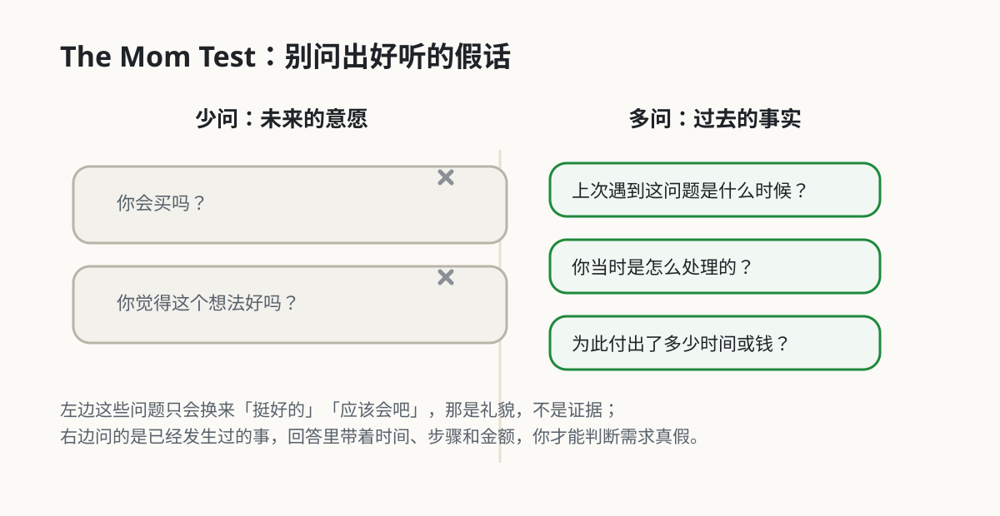

4. 用访谈验证需求
本章目录 · 1 节
The Mom Test：用户访谈方法
上一章得到的 JTBD 句子仍然是假设。我们需要通过访谈检查：这个问题最近是否真的发生过，用户是否已经为它付出了时间、金钱或精力。
这听起来并不困难。但如果直接询问对方是否喜欢某个想法，往往只会得到礼貌而笼统的回答：
- 你觉得我这个想法怎么样？
- 如果有这样一个产品，你会不会用？
- 这个功能听起来是不是还不错？
例如：
- 挺好的啊
- 听起来很有用
- 我觉得你可以试试
这些回答并没有错，只是很难支持产品决策。The Mom Test 提醒我们少问未来的意愿，多问过去发生过什么、用户怎样处理、为此付出了什么。
本章讨论如何避免这类“假阳性”反馈，并将注意力从意见和未来假设转向过去的行为、现有做法和已经付出的成本。
1. 为什么访谈会得到假阳性
The Mom Test 来自 Rob Fitzpatrick 的同名书籍。这个名称指出了访谈中的一个常见现象：
就算是你妈妈，也很难直接告诉你“这是个烂想法”。
原因不是她不诚实，而是：
- 她不想伤害你
- 她会下意识鼓励你
- 她很容易顺着你的表达方式回答
其实不只是妈妈，朋友、同事、前同学，甚至很多陌生人，在面对你的产品想法时，也常常会给出类似的“正向反馈”。这不代表需求真的存在，只代表你把问题问成了一个很容易得到好听答案的形式。
因此，The Mom Test 的重点不是访谈谁，而是问题如何组织。访谈应尽量寻找可核对的经历，而不是收集对方对产品想法的评价。

2. 意见与行为证据
The Mom Test 主要解决的是一种非常常见的认知错觉：
把礼貌性的积极反馈，当成真实需求。
比如你问：
- 你觉得这个 App 想法怎么样？
- 如果我做一个 AI 帮你写简历的工具，你会用吗？
- 这个功能是不是很有价值？
这些问题的共同特点是：
- 它们都在问“意见”
- 它们都带着一点暗示
- 它们都在谈一个还没发生的未来
而人对“意见”和“未来假设”的回答，通常都不稳定。很多人会高估自己的兴趣、高估自己的执行力，也会高估自己未来的购买意愿。
所以 The Mom Test 提醒你：
- 不要太相信别人对你点子的评价
- 不要太相信别人对未来行为的预测
- 要尽量回到用户已经发生过的真实行为里
因为和“你会不会用”相比，“你上次怎么处理这件事的”往往更接近真相。
3. 三个提问原则
下面三个原则将提问从产品方案转向用户已经发生的经历。
3.1 少谈你的点子，多谈用户过去的真实经历
很多无效访谈一开场就讲自己的方案，讲自己多么兴奋，讲自己准备做什么产品。问题是，一旦你讲得太多，对方就很容易切换到“配合你”“鼓励你”的状态。
相比之下，更好的方式是把重点放在对方的经历上：
- 最近一次遇到这个问题是什么时候？
- 当时你在做什么？
- 你最后是怎么处理的？
- 哪一步最麻烦？
这类问题能更自然地把对话带回现实，而不是停留在想象中的偏好。
3.2 少问抽象意见，多问具体事实
“我觉得这个功能挺好”“听起来不错”“好像有点用”，这些表达都太抽象了，很难指导产品决策。
更有价值的信息通常长这样：
- 我上周刚为了这件事折腾了 2 小时
- 我现在是用 Excel 加微信硬撑
- 我上个月已经为类似工具花过钱
- 我最怕的是做错，不是做慢
这些才是真正能帮你判断问题强度、频率和付费可能性的信息。
3.3 少问用户想要什么方案，多看他现在怎么解决问题
用户很擅长描述自己的困扰，但不一定擅长设计解决方案。
如果你问：
- 你想不想要一个 AI 帮你自动做这个？
- 你觉得加个智能功能有没有帮助？
你得到的，通常只是对某个方案的模糊态度，而不是需求本身。
更好的问题是：
- 你现在用什么方法处理这个问题？
- 为什么你会选择这种方式？
- 它哪里不够好？
看清现有替代方案，往往比直接问“你想要什么”更重要。

4. 为什么人们总会给你好听但没用的回答
如果你能理解这件事，做访谈时就会少很多误判。
4.1 人会下意识地保持礼貌
尤其当对话对象和你有关系时，对方很难直接说：
- 这个方向听起来不太行
- 我根本不会用
- 这个问题对我没那么重要
他更可能说“挺好的”“有机会可以做做看”。
4.2 人会高估未来的自己
很多人真心相信自己未来会：
- 更自律
- 更愿意学习
- 更愿意付费
- 更愿意尝试新工具
所以“如果有的话我应该会用”这句话，常常并不等于未来真的会用。
4.3 你的提问方式本身就在引导答案
当你问：
- 我这个想法是不是挺好？
- 这个功能对你来说是不是很有帮助？
你其实已经偷偷把“正确答案”塞进问题里了。
这也是为什么 The Mom Test 特别强调：不要把访谈做成你在寻找认可。
5. 直接对比：什么问题容易问废，什么问题更有价值
下面这些对照，几乎是每个新手都会用到的。
| 容易问废的问题 | 更有价值的问题 |
|---|---|
| 你觉得我这个想法怎么样？ | 你最近一次遇到这个问题是什么时候？ |
| 如果有这个产品你会用吗？ | 你现在是怎么处理这件事的？ |
| 你愿意为这个功能付费吗？ | 你上次为了这个问题花过钱吗？花在什么上？ |
| 你觉得这个功能重要吗？ | 这个流程里最烦、最慢、最不放心的是哪一步？ |
| 你想不想要一个 AI 帮你自动做？ | 你现在为什么还没有找到更顺手的解决办法？ |
这些改写有三个共同点：
- 从意见走向事实
- 从未来走向过去
- 从你的方案走向用户的问题
下面的练习给出了六句常见的访谈原话。尝试判断哪些是可用的证据，哪些只是意见。
6. 访谈的基本顺序
一次简短访谈可以按下面的顺序进行。
6.1 开场：说明你在学习，不是在推销
比如：
我最近在研究大家怎么处理这类问题，想先了解真实情况，不是来卖东西的。
这种表达会让对方更容易放下“我要给你积极反馈”的心理负担。
6.2 从最近一次真实经历开始问
可以先从这类问题开始：
- 最近一次遇到这个问题是什么时候？
- 当时发生了什么？
- 你第一反应是怎么处理的？
一旦对话进入具体事件，信息质量通常会明显提升。
6.3 往下追问行为、成本和替代方案
继续问：
- 你现在用什么办法解决？
- 这个办法最不舒服的地方是什么？
- 你为此花过多少时间、钱或者精力？
- 你试过别的方法吗？为什么没继续用？
6.4 最后再判断痛感和优先级
你不需要直接问“痛不痛”，可以从细节里判断：
- 他是不是经常遇到
- 他是不是已经在主动补救
- 他是不是已经愿意为此付出成本
- 他在讲这件事时是不是带着明显情绪
这些都比一句“这是不是你的痛点”更有用。
7. 一个更完整的例子
假设你想做一个“AI 帮大学生改简历”的产品。
错误问法
你去问同学：
我想做一个 AI 简历优化工具，你觉得怎么样？
如果它能根据岗位自动改简历，你会不会用？
这时候，对方很可能会说：
- 听起来挺好
- 我觉得应该有用
- 如果免费我会试试
这些回答几乎没有办法帮你判断需求到底强不强。
更好的问法
你可以改成：
你最近一次改简历是什么时候？
当时为什么要改？
你是怎么改的？
哪一步最卡？
你有没有找过别人帮你看？
你以前为简历这件事花过钱或者花过很多时间吗？
通过这些问题，你可能得到的信息会是：
- 很多人会写，但不知道怎么针对不同岗位改写
- 他们最痛的跟排版无关，是“不知道哪些经历值得写”
- 他们拖延是因为每次改简历都很消耗，跟懒没关系
- 他们已经在用学长建议、模板网站、AI 工具和朋友帮看来勉强解决
这时候，你离真实问题就近得多了。
8. The Mom Test 和 JTBD 怎么配合用
如果说 JTBD 帮你看清“用户想完成什么进展”，那么 The Mom Test 更像是在教你：
怎么通过访谈，确认这个 job 是不是真的存在。
你完全可以把两者接起来使用：
- 先用 JTBD 假设一个 job
- 再用 The Mom Test 的方式，去问用户最近一次真实经历
- 看看这个 job 是否真的高频、真实、值得优先做
比如你的 JTBD 假设是：
当我准备投递实习时，我想快速把旧简历改成贴合岗位的版本，以便尽快完成投递。
那你就可以用 The Mom Test 风格的问题去验证：
- 你最近一次投递是什么时候？
- 当时你是怎么改简历的？
- 哪一段最难写？
- 你改完之后怎么判断它够不够好？
这样，方法就连起来了：
- JTBD 帮你定义需求假设
- The Mom Test 帮你访谈验证假设
访谈帮助我们理解过去发生了什么，但它还不是最后一步。原型做出来后，还要让用户实际操作，观察他说的做法与真实行为是否一致。

9. 新手做用户访谈时最常见的误区
9.1 把访谈做成产品介绍会
你一讲太多自己的想法，对方就容易开始配合你，而不是告诉你真实情况。
9.2 访谈对象全是熟人
熟人不是不能聊，但熟人更容易鼓励你。你至少需要混合一些更接近真实用户的人，而不是只找支持你的人。
9.3 过早追着问功能
如果你还没搞清楚问题，就开始追问按钮、界面、功能细节，通常是在太早进入解决方案。
9.4 把一句“我会用”当成验证结果
访谈最多帮你判断方向，不等于已经完成验证。真正的验证，最终还是要看用户是否愿意付出真实成本，比如时间、切换成本、试用行为，甚至付费。
9.5 访谈结束后不整理
如果你聊完就放着，信息很快会变成模糊印象。最好尽快整理：
- 出现频率高的问题
- 用户原话里的情绪词
- 当前替代方案
- 已经付出的成本
- 你自己的新判断

10. 可以直接复制去用的问题清单
如果你想尽快开始，这里有一组足够通用的问题。
开场问题
- 最近一次你遇到这个问题是什么时候？
- 当时具体发生了什么？
行为问题
- 你当时是怎么处理的？
- 你为什么会选择这种方式？
成本问题
- 这件事一般会花掉你多少时间或精力？
- 你有没有为了解决它花过钱？
替代方案问题
- 你试过别的工具或办法吗？
- 为什么最后没有继续用？
收尾问题
- 如果以后还遇到同样的问题，你觉得最理想的解决方式应该是什么样？
注意，这个收尾问题可以问，但最好放在后面。因为前面你更需要拿到事实，而不是愿望。
11. 使用 AI 准备和整理访谈
The Mom Test 本质上还是一套“和真人聊”的方法，所以 AI 不能替代真实访谈。但 AI 非常适合在访谈前、中、后给你打辅助，尤其适合帮新手降低门槛。
12.1 让 AI 帮你把“容易问废”的问题改写掉
很多人知道自己不该问“你觉得我这个想法怎么样”，但一开口还是会回到这种句子。你可以先把自己准备问的问题交给 AI，让它帮你改写：
下面是我准备做用户访谈时想问的问题：
[贴上你的问题]
请你用 The Mom Test 的原则帮我改写：
1. 删掉意见型问题
2. 删掉假设未来的问题
3. 尽量改成围绕过去真实行为、已有替代方案和已付成本的提问
4. 最后整理成一套 8-10 个可以直接访谈的问题清单
一个很小白的输入也完全可以：
我想问用户：
1. 你觉得我做一个 AI 改简历工具怎么样？
2. 你会不会用？
3. 你愿不愿意付费？
请帮我改成更好的问法。
AI 可能给出的有用输出会像这样：
改写后的问题：
1. 你最近一次改简历是什么时候？
2. 当时为什么要改？
3. 你是怎么改的？
4. 哪一步最花时间？
5. 你有没有找别人帮你看？
6. 你以前有没有为简历修改花过钱或花过很多时间？
这种输出很有帮助，因为它直接把你原本“在问意见”的问题，改成了“在问真实行为”的问题。
12.2 让 AI 帮你生成不同对象的访谈提纲
同一个方向，面对不同人群，访谈重点会不一样。比如学生、HR、自由职业者，关心点完全不同。你可以让 AI 帮你针对不同对象各出一版提纲：
- 面向新手用户，重点了解最近一次真实经历
- 面向重度用户，重点了解替代方案和痛感
- 面向付费用户，重点了解是否已经为此付过成本
这样你在真正聊天时会更有节奏，而不会每个人都问同一套问题。
比如你可以直接这样输入：
我要聊两类人：
1. 第一次找实习的大学生
2. 已经帮别人看过很多简历的学长学姐
请分别给我一套访谈提纲，每套 6 个问题。
AI 可能输出：
对大学生：
1. 最近一次投实习是什么时候？
2. 当时最卡的是哪一步？
3. 你怎么知道自己的简历能不能投？
...
对学长学姐：
1. 你最近一次帮别人看简历是什么时候？
2. 你最常看到哪些明显问题？
3. 学弟学妹最容易卡在哪一步？
...
这样一来，你不用自己从零编问题，访谈准备会轻松很多。
12.3 让 AI 帮你整理访谈记录
访谈做完之后，最容易出现的问题不是“没信息”，而是“信息太散”。AI 很适合帮你把碎片化对话整理成结构化笔记：
.jpg)
下面是我和 3 位用户的访谈记录。
请按 The Mom Test 的角度整理：
1. 哪些内容是事实，哪些只是意见
2. 用户最近一次真实行为是什么
3. 当前替代方案是什么
4. 用户已经付出的时间、金钱或精力成本是什么
5. 哪些问题被反复提到
6. 哪些说法听起来积极，但证据不足
这一步尤其有价值，因为它能帮你把“听起来不错”的内容和“真的能支撑判断”的内容分开。
一个简单输入可以是：
这是我和一个用户聊完后的记录：
- 她说如果有个工具应该会试试
- 她上周为了改简历花了一个晚上
- 她现在主要靠朋友帮看
- 她说最难的是不知道改到什么程度算可以投
请你帮我分一下，哪些是意见，哪些是事实。
AI 可能输出：
意见：
- 如果有个工具应该会试试
事实：
- 上周为了改简历花了一个晚上
- 当前替代方案是找朋友帮看
- 最难点是不知道什么时候算“可以投”
可用于判断需求的重点：
- 这个问题最近刚发生过
- 用户已经投入了明显时间成本
- 当前方案依赖他人，不稳定
这个输出就能很直观地告诉新手：哪些话能拿来做判断，哪些话只能听听。
12.4 让 AI 先做一轮轻量级网络搜索
如果你还没开始访谈，可以先让 AI 帮你做一些很轻的外部调研，比如：
- 公开社区里，大家最近是怎么抱怨这个问题的
- 现有工具被吐槽最多的是什么
- 用户是不是已经为相似问题花过钱
- 市场上有哪些替代方案已经存在
这类信息不能替代真人访谈，但能帮你更快进入状态，知道该从哪里切入问题。
比如一个简单输入可以是：
请你帮我搜一下：
“大学生改简历时最常吐槽什么”
帮我整理出 5 条最常见抱怨，用很白话的话写出来。
AI 可能输出：
常见抱怨：
1. 不知道简历上到底该写什么
2. 每投一个岗位都要改，太累
3. 改了很多版还是不确定好不好
4. 没人能给靠谱反馈
5. 总觉得还没准备好，所以一直拖
这种结果的价值在于，它会让你更容易找到访谈切入口。
12.5 让 AI 扮演“访谈复盘教练”
你还可以把自己刚做完的一场访谈记录丢给 AI，让它帮你挑刺：
下面是我的一段用户访谈记录。
请从 The Mom Test 的角度帮我复盘：
1. 我哪些问题问得太像在找认可
2. 哪些问题带有明显引导
3. 哪些地方本来可以继续追问事实
4. 如果再来一次，这段对话可以怎么问得更好
这对新手特别有帮助，因为你会更快建立一种“我到底是在收集证据，还是在收集鼓励”的敏感度。
12. 小结
- 对产品想法的积极评价不能单独作为需求证据。
- 访谈应优先询问过去的具体经历，而不是对未来行为的预测。
- 行为、时间、金钱和现有替代方案是判断问题强度的主要依据。
- AI 可以帮助准备提纲和整理记录，但不能替代真实访谈。
13. 练习
- 选一个你最近想做的产品方向，写下五个准备询问的问题。
- 删掉“你会不会用”这类假设题，改问对方最近一次真实经历。
- 找一位可能遇到这个问题的人，完成一次访谈。
- 记下他的做法、替代方案、付出的成本和反复出现的困难。
访谈时先听，不急着介绍自己的方案。一次认真访谈，比收集很多句“这个想法不错”更有用。